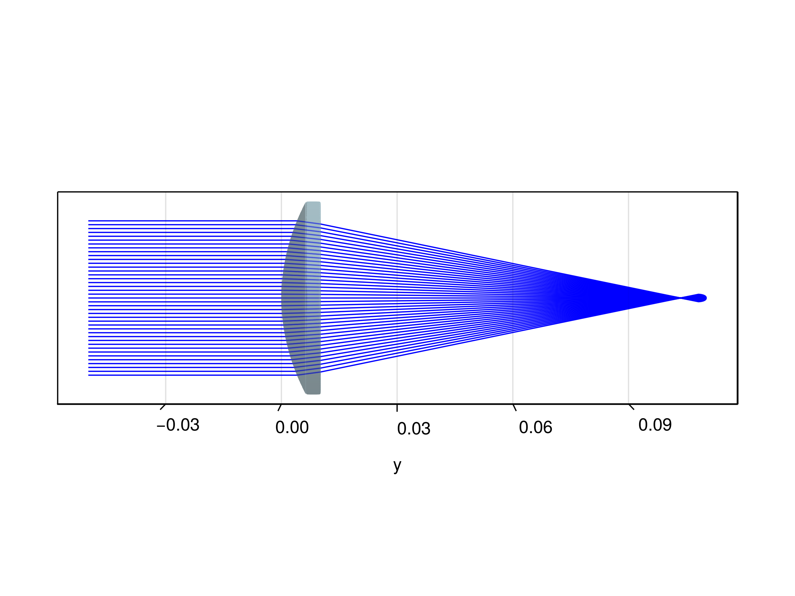
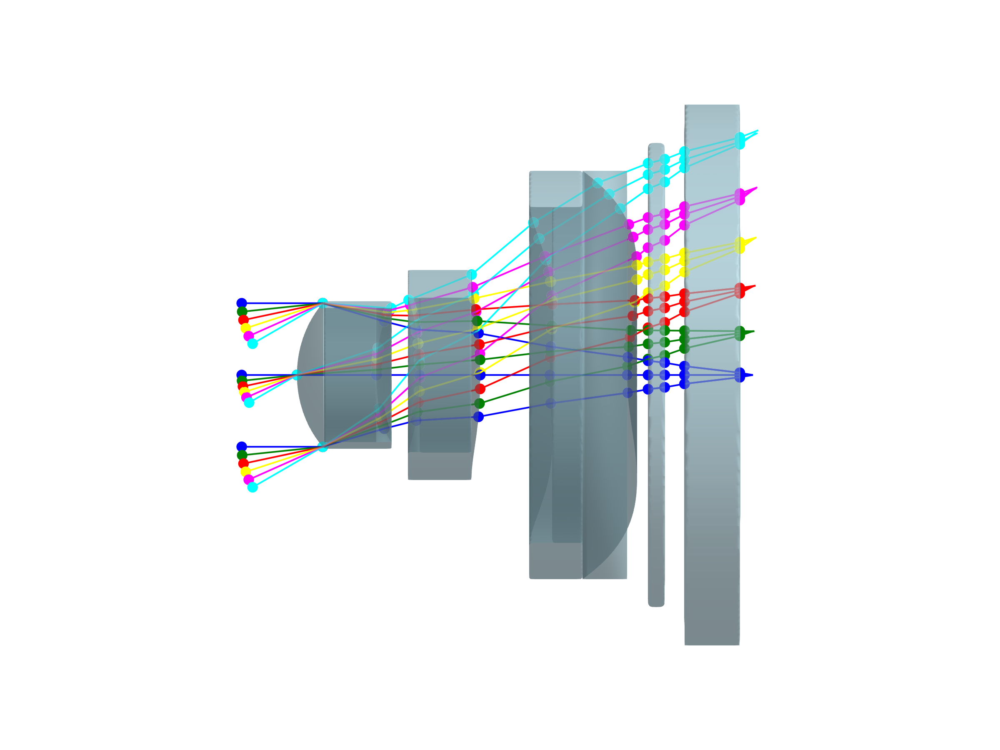

Simple aspherical lens example
The package has a basic support for ISO 10110 even aspheres. It is planned to extend this support in the future to include extended aspheres and maybe Q-aspheres. The following example shows the most simple usage of the plano-aspheric asphere constructor based on the Thorlabs AL50100J aspheric lens:
using CairoMakie, BeamletOptics
# radius
R = 50.3583e-3
# conic constant
k = -0.789119
# even aspheric coefficients up to 8th order
A = [0, 2.10405e-7*(1e3)^3, 1.76468e-11*(1e3)^5, 1.02641e-15*(1e3)^7]
# center thickness
ct = 10.2e-3
# diameter
d = 50e-3
# refractive index of BK-7 @ 1310 nm (design wavelength)
n = 1.5036
lens = Lens(
EvenAsphericalSurface(R, d, k, A),
SphericalSurface(Inf, d),
ct,
x -> n
)
system = System(lens)
fig = Figure(size=(640,480))
ax = fig[1,1] = Axis3(fig, aspect=:data, azimuth=0., elevation=1e-3)
hidexdecorations!(ax)
hidezdecorations!(ax)
for z in -0.02:0.001:0.02
pos = [0.0, -0.05, z]
dir = [0.0, 1.0, 0]
ray = Ray(pos, dir)
beam = Beam(ray)
solve_system!(system, beam, r_max=40)
render_beam!(ax, beam, flen=0.1)
end
render_object!(ax, lens)
Complex aspherical lens example
This example shows how a complex optical system for a mobile device can be modeled and traced using this package. This example is taken from Pencil of Rays.
The whole system consists of three complex-shaped aspherical lenses, a filter and a cover glass in front of a sensor plane. All five components can be easily modeled using the Lens constructor and shifted in space using the kinematic API. The field has to be modeled manually.
using CairoMakie, BeamletOptics
## mobile-kyocera-3P_USP8558939.zmx
# construct the first lens
L1 = Lens(
EvenAsphericalSurface(
1.054e-3, # r
1.333024e-3, # d
-0.14294, # conic
[0,0.038162*(1e3)^3, 0.06317*(1e3)^5, -0.020792*(1e3)^7, 0.18432*(1e3)^9,
-0.04827*(1e3)^11, 0.094529*(1e3)^13] # coeffs
),
EvenAsphericalSurface(
2.027e-3, # r
1.216472e-3, # d
8.0226, # conic
[0,0.0074974*(1e3)^3, 0.064686*(1e3)^5, 0.19354*(1e3)^7, -0.50703*(1e3)^9,
-0.34529*(1e3)^11, 5.9938*(1e3)^13] # coeffs
),
0.72e-3, # center thickness
n -> 1.580200
)
# construct the second lens
L2 = Lens(
EvenAsphericalSurface(
-3.116e-3, # r
1.4e-3, # d
-49.984, # conic
[0,-0.31608*(1e3)^3, 0.34755*(1e3)^5, -0.17102*(1e3)^7, -0.41506*(1e3)^9,
-1.342*(1e3)^11, 5.0594*(1e3)^13, -2.7483*(1e3)^15] # coeffs
),
EvenAsphericalSurface(
-4.835e-3, # r
1.9e-3, # d
1.6674, # conic
[0,-0.079727*(1e3)^3, 0.13899*(1e3)^5, -0.044057*(1e3)^7,
-0.019369*(1e3)^9, 0.016993*(1e3)^11, 0.093716*(1e3)^13,
-0.080329*(1e3)^15] # coeffs
),
0.55e-3, # center_thickness
n -> 1.804700
)
# shift the second lens to its position, assuming L1 is at the origin (0,0,0)
translate3d!(L2, [0, BeamletOptics.thickness(L1) + 0.39e-3,0])
# construct the third lens
L3 = Lens(
EvenAsphericalSurface(
3.618e-3, # r
3.04e-3, # d
-44.874, # conic
[0,-0.14756*(1e3)^3, 0.035194*(1e3)^5, -0.0032262*(1e3)^7,
0.0018592*(1e3)^9, 0.00036658*(1e3)^11, -0.00016039*(1e3)^13,
-3.1846e-5*(1e3)^15] # coeffs
),
EvenAsphericalSurface(
2.161e-3, # r
3.7e-3, # d
-10.719, # conic
[0,-0.096568*(1e3)^3, 0.026771*(1e3)^5, -0.011261*(1e3)^7,
0.0019879*(1e3)^9, 0.00015579*(1e3)^11, -0.00012433*(1e3)^13,
1.5264e-5*(1e3)^15] # coeffs
),
0.7e-3, # center_thickness
n -> 1.580200
)
# first translate the lens to the L2 position, then shift it by the relative offset with respect to L2
translate_to3d!(L3, BeamletOptics.position(L2))
translate3d!(L3, [0, BeamletOptics.thickness(L2) + 0.63e-3,0])
# construct the filter by setting the radius to Inf for front/back, resulting in a parallel plate
Filt = Lens(
SphericalSurface(Inf, 4.2e-3),
SphericalSurface(Inf, 4.2e-3),
0.15e-3,
n -> 1.516800
)
# same principle as for L3
translate_to3d!(Filt, BeamletOptics.position(L3))
translate3d!(Filt, [0, BeamletOptics.thickness(L3) + 0.19e-3,0])
# Construct the cover glass and shift into position
Cover = Lens(
SphericalSurface(Inf, 4.9e-3),
SphericalSurface(Inf, 4.9e-3),
0.5e-3,
n -> 1.469200
)
translate_to3d!(Cover, BeamletOptics.position(Filt))
translate3d!(Cover, [0, BeamletOptics.thickness(Filt) + 0.18e-3,0])
system = System([L1, L2, L3, Filt, Cover])
fig = Figure()
ax = Axis3(fig[1,1], aspect=:data, azimuth=0.0, elevation=.0)
hidedecorations!(ax)
hidespines!(ax)
render_system!(ax, system)
# 0° beams
beams = [
Beam([0, -0.5e-3, -1.3e-3/2], [0, 1, 0], 0.5876e-6),
Beam([0, -0.5e-3, 0], [0, 1, 0], 0.5876e-6),
Beam([0, -0.5e-3, 1.3e-3/2], [0, 1, 0], 0.5876e-6)
]
field_angles = 6:6:30
colors = [:blue, :green, :red, :yellow, :magenta, :cyan]
for beam in beams
i = 1
solve_system!(system, beam, r_max=50)
render_beam!(ax, beam, flen=0.12e-3, color = colors[i], show_pos=true)
# use the 0° beams to construct all other beam sets
pos = beam.rays[1].pos + BeamletOptics.intersection(beam.rays[1]).t*beam.rays[1].dir
for angle in field_angles
i += 1
# tilted input beam generation
dir = [0, cosd(angle), sind(angle)]
spos = pos - dir * BeamletOptics.intersection(beam.rays[1]).t
abeam = Beam(spos, dir, beam.rays[1].λ)
# trace through system
solve_system!(system, abeam, r_max=50)
render_beam!(ax, abeam, flen=0.12e-3*(1+sind(angle)), color = colors[i], show_pos=true)
end
end